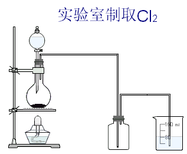
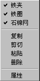
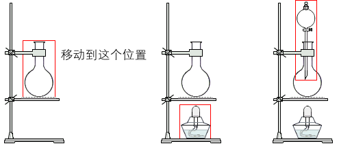

搭建实验仪器
用仿真化学实验室提供的实验器件，您可以十分方便的搭建出各种实验装备，例如：制取O2的装置，制取Cl2的装置,洗气装置，干燥装置等等。
现在我们就以搭建实验室制取Cl2的装置为例，介绍具体的搭建过程。

首先我们需要一个铁架台。用鼠标点击器件箱中的铁架台图标，在弹出的子器件箱中点击左边的那个铁架台，再在实验区中点击一下鼠标就可以把这个铁架台放在实验区中了。


创建出的铁架台带有铁夹、铁圈和石棉网。用鼠标右键点击这个铁架台，在弹出的菜单中您可以设置是否需要铁夹、铁圈等附件。在这个实验装置中，铁夹、铁圈和石棉网都是需要的。接下来我们需要一个圆底烧瓶，用鼠标点击器件箱中的圆底烧瓶图标，再在实验区中点击一下鼠标就可以把圆底烧瓶放在实验区中了。创建其它器件的方法与此类似。
用鼠标左键点击实验区中的器件不放，然后滑动鼠标可以移动器件。下面我们要把圆底烧瓶夹在铁架台的铁夹上。移动圆底烧瓶到适当的位置，然后松开鼠标就可以了。在移动铁架台的时候，烧瓶也会随之移动。

再创建一个分液漏斗，把它放在圆底烧瓶的上方，把它的细长的玻璃管插入到圆底烧瓶中。用鼠标右键点击圆底烧瓶，在弹出的菜单中点击“橡皮塞”，就可以为圆底烧瓶添加橡皮塞了。然后用类似的方法把酒精灯放在铁架台的底座上。再在实验区中放置一个开口向上集气瓶和烧杯。
现在，所有的实验器件都放好了，接下来我们要连接导管了。在这个实验中，我们要把圆底烧瓶中生成的Cl2通入到集气瓶中进行收集，然后在把集气瓶中过量的Cl2通入到装有NaOH溶液的烧杯中。仿真化学实验室为您提供了各种形状的导管，导管之间也是可以相互连接的。
导管的创建方法是这样的，首先用鼠标点击器件箱中的导管按钮，然后在实验区中点击一下鼠标，确定导管一个端点的位置，移动鼠标到合适的位置再点击一下鼠标，导管就被创建出来了。创建出的导管可以被整体移动，也可以只移动它的端点。插入到容器中的导管，在容器被移动时会随之移动。
这样我们就把这个实验所需的装置搭建出来了。用仿真化学实验室可以十分方便的搭建各种实验装置，又可以保持各实验器件之间的约束关系。
下面的工作就是要在容器中添加药品了。